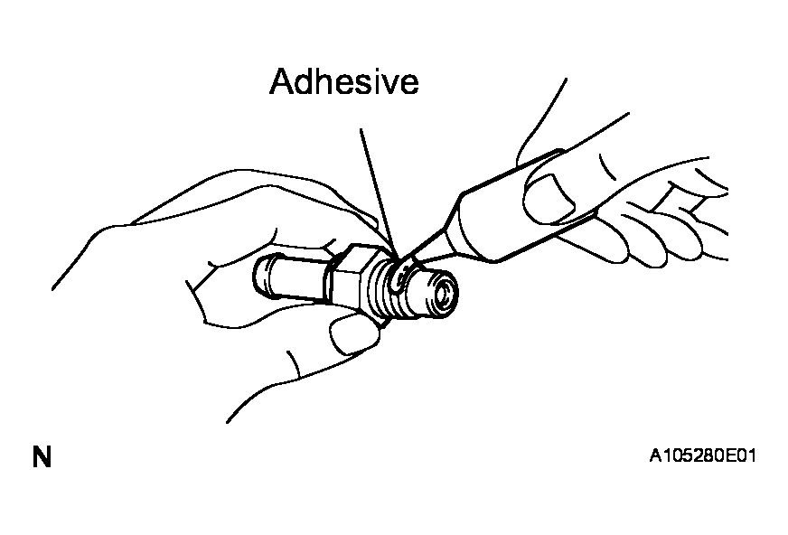

Ventilation Valve: Installation
- INSTALL VENTILATION VALVE
- Apply adhesive to 2 or 3 threads of the valve.

Courtesy of © TOYOTA, LICENSE AGREEMENT TMS1002Adhesive: Part No. 08833-00070, THREE BOND 1324 or equivalent.
- Install the ventilation valve.
Torque: 27 N*m (275 kgf*cm, 20 ft.*lbf)
- Apply adhesive to 2 or 3 threads of the valve.
- CONNECT VENTILATION HOSE
- Connect the ventilation hose to the ventilation valve.
- INSTALL NO. 2 CYLINDER HEAD COVER (See INSTALLATION )